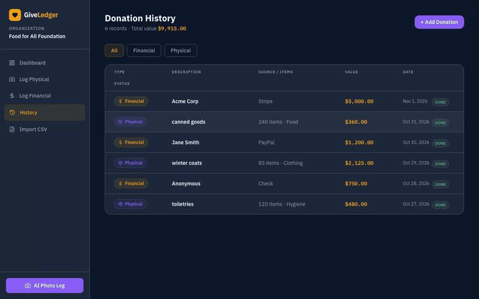

GiveLedger · HackDavis 2026
An AI donation tracker for nonprofits. Snap a photo of donated goods and the app identifies items, estimates value, and logs it, no more manual intake.

Screenshots
Overview
GiveLedger was my HackDavis 2026 project. Nonprofits that take in physical donations spend a lot of time logging what came in and estimating its value for records and tax receipts. GiveLedger turns that manual intake into a few taps.
A volunteer snaps a photo of the donated goods, and the app uses AI vision to identify the items, estimate a value, and log everything into a clean running ledger the organization can actually use.
How It Works
- Volunteer photographs a batch of donated items
- AI vision identifies the items in the photo
- The app estimates a value for each item
- Everything is written into a running donation ledger
- Next.js front end keeps the whole flow to a few taps
What I Learned
- Building an AI vision workflow around a real intake problem
- Scoping and shipping a working MVP inside a hackathon weekend
- Designing for non-technical users (volunteers, not engineers)
- Turning messy real-world input into structured, usable records